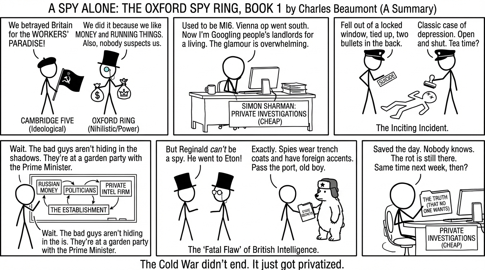

isbn-13: 9781804364796
Audible
AI Generated Content
Generated by gemini-3-pro-preview

A Spy Alone marks the debut novel of Charles Beaumont—a pseudonym for a former operative of Britain’s Secret Intelligence Service (MI6). Set against the backdrop of contemporary geopolitics, specifically the friction between the West and a resurgent Russia, the narrative serves as the opening installment of The Oxford Spy Ring series. The novel combines procedural tradecraft with a revisionist historical premise: that while the Cambridge Five were infamous for their ideological betrayal, a separate, more insidious ring of spies was recruited at Oxford University, remaining undetected and embedded within the British establishment for decades.
Plot Summary and Story Arc
The narrative centers on Simon Sharman, a former MI6 officer whose career ended in disgrace following a botched operation in Vienna involving arms dealers. Now working in the private sector on low-level surveillance and due diligence tasks, Sharman is financially insecure and professionally isolated. His stasis is interrupted when he is contacted by a retired Oxford don and former intelligence recruiter who claims to possess explosive information regarding a long-dormant Soviet network.
When the contact dies under suspicious circumstances—ruled a suicide by authorities but doubted by Sharman—the protagonist inherits the investigation. The central mystery revolves around the theory that Soviet intelligence recruited a cell at Oxford parallel to the Cambridge spy ring. Unlike their Cambridge counterparts, who were driven by communist ideology, the Oxford ring is depicted as being motivated by a nihilistic desire for power and self-preservation, allowing them to transition seamlessly from serving the USSR to serving the modern Russian Federation.
Sharman’s investigation leads him into a labyrinth of Russian oligarch money, compromised politicians, and a private intelligence firm that operates in the grey zones of the law. As he peels back the layers of the conspiracy, he discovers that the network is not a historical relic but an active threat facilitating Russian influence operations within the highest echelons of the British government. The arc follows Sharman as he moves from a cynical outsider to a man burdened with the responsibility of exposing a rot that the official services are too compromised or too bureaucratic to see. The climax involves a race to secure proof of the ring’s existence before the network utilizes its institutional power to silence Sharman permanently.
Character Development
Simon Sharman Sharman is characterized as the archetypal “outsider” spy. Having been ejected from the “Company,” he operates without the safety net of diplomatic immunity or institutional backup. This status defines his methodology; he relies on old-school tradecraft, physical surveillance, and intuition rather than high-tech gadgetry. His development is defined by a shift from apathy to moral agency. Initially motivated by the need for a paycheck, he becomes driven by a patriotic duty to protect a state that rejected him. His cynicism is a defense mechanism, masking a lingering adherence to the ethical standards of his former profession.
The Establishment While there are specific antagonists, the true antagonist of the novel is the British Establishment itself. Beaumont populates the book with characters who represent the intersection of old money, elite education, and political power. These characters are depicted not merely as traitors but as individuals who believe they are above the nation-state. The villains are characterized by their ability to manipulate the class system to evade scrutiny, contrasting sharply with Sharman’s working-class grit.
Themes and Messages
The “Fatal Flaw” of British Intelligence
A primary theme is the blindness of the British class system. The novel posits that the intelligence services were so focused on the Cambridge spies that they ignored Oxford because the potential traitors there looked and sounded exactly like the men hunting them. The book suggests that the establishment protects its own, creating a blind spot that foreign powers can exploit. As the narrative suggests, the Oxford spies were never caught because they were the ones running the country.
Ideology vs. Opportunity
Beaumont draws a distinct line between the Cold War spying of the past and modern espionage. The Cambridge Five are referenced as ideological traitors who believed in a cause. In contrast, the Oxford ring and their modern successors are depicted as being driven by cynicism and greed. This reflects a thematic shift from the binary of Communism vs. Capitalism to a murkier conflict involving kleptocracy and destabilization.
The Persistence of the Past
The story underscores the idea that the Cold War never truly ended; it merely changed shape. The narrative argues that the networks established during the Soviet era did not dissolve in 1991 but were repurposed. The book frequently references the “Long Game” played by Russian intelligence, contrasting it with the short-term political cycles of Western democracies.
Narrative Style
The prose is restrained and technical, reflecting the author’s background in intelligence. The focus is on the minutiae of espionage—dead drops, counter-surveillance routes, and asset validation—rather than cinematic action sequences. The tone is somber and analytical, prioritizing the intellectual puzzle of counter-intelligence over high-octane thrills.
Through Sharman, Beaumont offers a critique of modern Britain, portraying a capital city awash in foreign money and a political class that has lost its moral compass. The novel concludes with the immediate threat resolved, but the overarching structural issues within the establishment remaining, setting the stage for future installments.